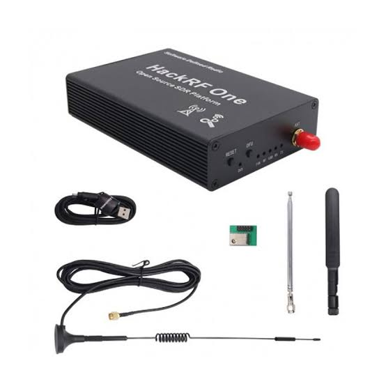
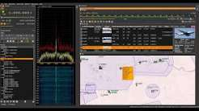
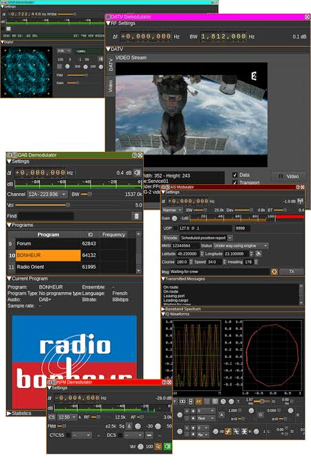
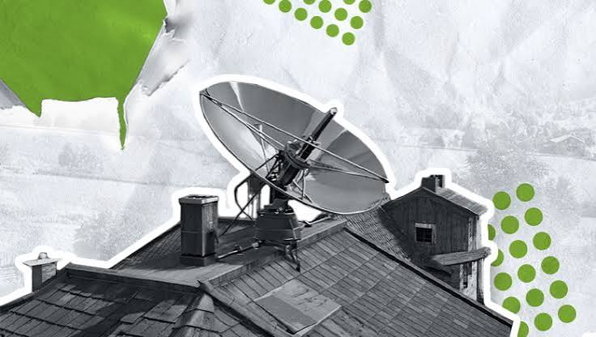
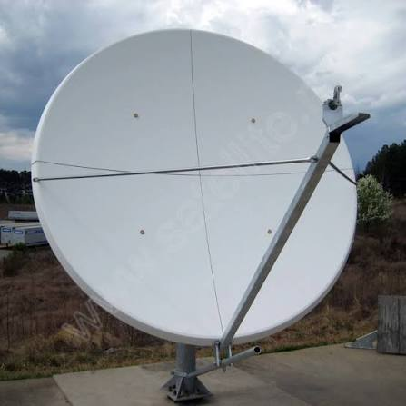

Почему антенна важнее приемника
Бесполезно иметь мощный SDR, если антенна не настроена на частоту. Ниже — восемь типов антенн; длину штыря можно прикинуть в калькуляторе.
Легко меняет длину. Идеальна для FM-радио (75 см), раций (17 см) и авиации (62 см). Формула длины: 7500 / частота в МГц. Дешево и сердито, но ловит много городских помех.
Работает по принципу магнитного поля. Отсекает электрические помехи от компьютеров и проводки (в отличие от штыря). Идеальна для приема УВБ-76 (4.625 МГц) и дальних станций в городе. Требует питания.
Делается из разъема SMA и 5 кусков медного провода (по 6.9 см). Один штырь вертикально, четыре — под углом 90°. Отлично ловит сигналы самолетов на 1090 МГц. Простая, дешевая и очень эффективная.
Выглядит как конус с диском. Позволяет слушать рации, авиацию, ТВ, Wi-Fi без смены антенны. Не даёт огромного усиления, но покрывает колоссальный диапазон частот.
Два провода (или штыря) в разные стороны. Резонанс на определённой частоте. Отлично для КВ (7 МГц, 14 МГц) и УКВ. Требует настройки под конкретную частоту.
Выглядит как «скелет рыбы». Фокусирует сигнал в одном направлении, давая большое усиление. Идеальна для спутников и дальних вышек. Минус: нужно точно направлять на источник.
Круговая поляризация. Нужна для снимков NOAA и Meteor (137 МГц). Спутники вращаются, обычная антенна теряет сигнал — QFH ловит с любой стороны.
Кусок провода 10–20 метров между деревьями или вдоль балкона. Работает для дальних КВ-станций (радиолюбители, иностранное радио). Главное — поднять повыше и подальше от источников помех.
Моя галерея проектов
Мой сетап и полевые эксперименты: от антенны на крыше до HackRF и SDRangel за монитором.





